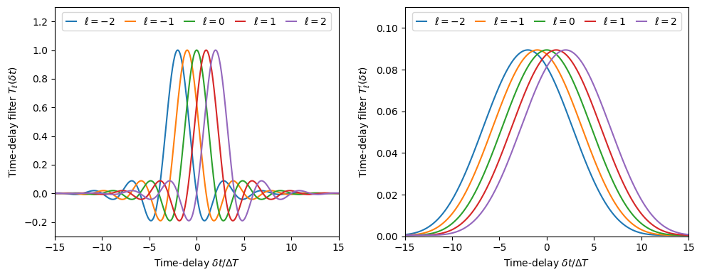

Time-Delay Filters
[1]:
import jax
import jax.numpy as jnp
import matplotlib.pylab as plt
import WDM
from WDM.code.discrete_wavelet_transform import WDM
from WDM.code.time_delay_filters.filters import time_delay_filter_Tl, time_delay_filter_Tprimel
[2]:
dt = 1.0
Nt = 32
Nf = 16
N = Nt*Nf
wdm = WDM.WDM_transform(dt=dt, Nf=Nf, N=N, q=8, calc_m0=True)
Plot the time-delay filter functions
(87)\[T_\ell(\delta t) = \int\mathrm{d}f\exp(2\pi i f(\ell\Delta T-\delta t))
|\tilde{\Phi}(f)|^2\]
(88)\[T'_\ell(\delta t) = \int\mathrm{d}f\exp(2\pi i f(\ell\Delta T-\delta t))
\tilde{\Phi}\left(f-\frac{1}{2}\Delta F\right)
\tilde{\Phi}\left(f+\frac{1}{2}\Delta F\right)\]
[3]:
delta_t_vals = jnp.linspace(-15*wdm.dT, 15*wdm.dT, 500)
Tl_vals = {}
Tprimel_vals = {}
ell_max = 2
for ell in range(-ell_max, ell_max+1):
Tl_vals[ell] = jnp.array([time_delay_filter_Tl(ell,
delta_t,
wdm.freqs,
wdm.window_FD,
wdm.dT,
wdm.df) for delta_t in delta_t_vals])
Tprimel_vals[ell] = jnp.array([time_delay_filter_Tprimel(ell,
delta_t,
wdm.freqs,
wdm.window_FD,
wdm.dT,
wdm.dF,
wdm.N,
wdm.df) for delta_t in delta_t_vals])
fig, axes = plt.subplots(ncols=2, figsize=(10, 4))
for ell in range(-ell_max, ell_max+1):
axes[0].plot(delta_t_vals/wdm.dT, Tl_vals[ell], label=r'$\ell={}$'.format(ell))
axes[1].plot(delta_t_vals/wdm.dT, Tprimel_vals[ell], label=r'$\ell={}$'.format(ell))
axes[0].set_xlim(delta_t_vals[0]/wdm.dT, delta_t_vals[-1]/wdm.dT)
axes[0].set_xlabel(r'Time-delay $\delta t/\Delta T$')
axes[1].set_xlim(delta_t_vals[0]/wdm.dT, delta_t_vals[-1]/wdm.dT)
axes[1].set_xlabel(r'Time-delay $\delta t/\Delta T$')
axes[0].set_ylim(-0.3, 1.3)
axes[0].set_ylabel(r'Time-delay filter $T_\ell(\delta t)$')
axes[1].set_ylim(0, 0.11)
axes[1].set_ylabel(r'Time-delay filter $T^\prime_\ell(\delta t)$')
axes[0].legend(ncols=5, loc='upper center', handlelength=1, columnspacing=1)
axes[1].legend(ncols=5, loc='upper center', handlelength=1, columnspacing=1)
plt.tight_layout()
plt.show()

[ ]: